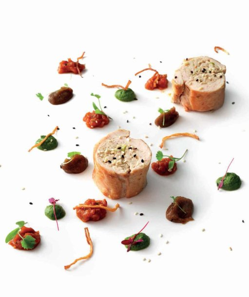

Chicken and ginger (Murg adraki)

It seems there is a lot happening in this recipe but look closely – it’s a combination of virtually chicken and ginger only. I have brought in flavours from across India and borrowed some techniques from the UK for this recipe. The chicken and ginger flavours work sincerely well with each other – try it!
To garnish
Mix together the chicken mince, spring onion, ginger, garam masala and salt to taste, then divide into 4 equal portions and set aside. One at a time, place the chicken supremes between 2 layers of cling film and flatten them using a meat mallet or rolling pin. As each supreme is flattened, place it on a fresh piece of cling film, skin side down. Place one portion of the chicken mixture on top and roll the flesh around the chicken mince, wrapping tightly in the cling film. Knot each end to hold the shape.
Clip a sugar thermometer to a saucepan filled with water and heat the water to 90°C. Add the chicken roulades, still wrapped in clingfilm, and poach for 12–15 minutes until they feel firm. Remove them from the water and set aside to rest for 10 minutes before unwrapping.
To serve, heat the sunflower oil in a large frying pan over a medium heat. Unwrap the chicken roulades and pat them dry. Sear them in the pan for 1–2 minutes until they are lightly coloured all round and heated through – a metal skewer should go into the stuffing and come out hot. Cut the ends off to get neat, even cylinders, then cut each roulade into thick slices.
Divide the chicken slices among 4 plates and add the ginger chutney, tomato chutney and mint and coriander chutney. Garnish and serve.